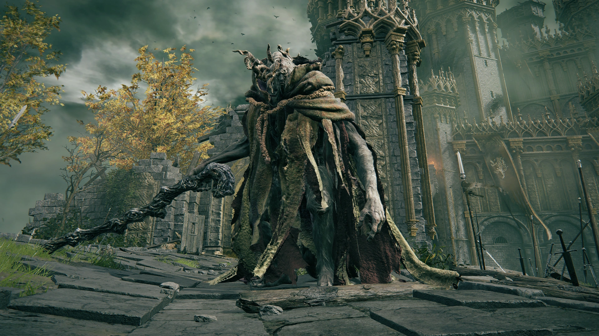
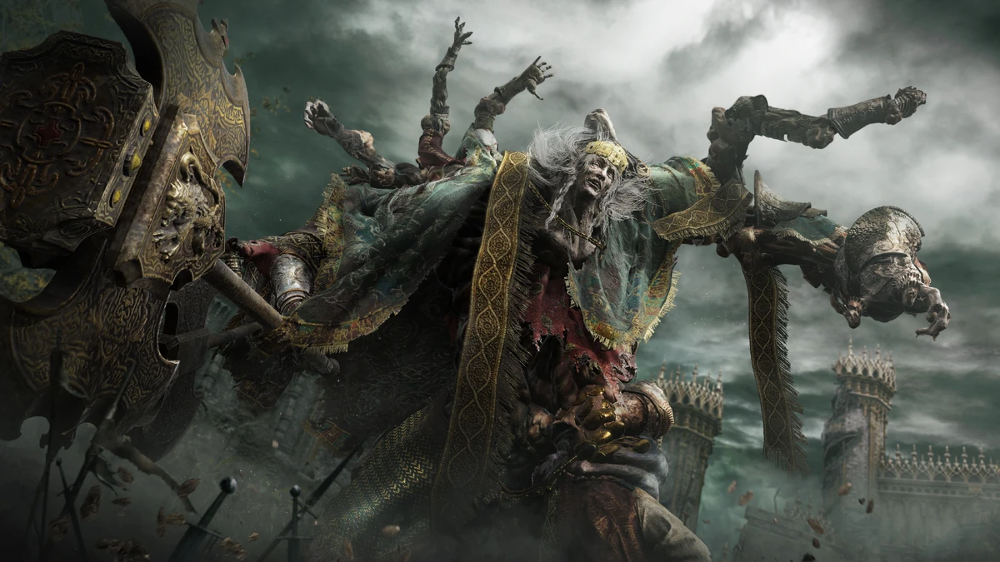
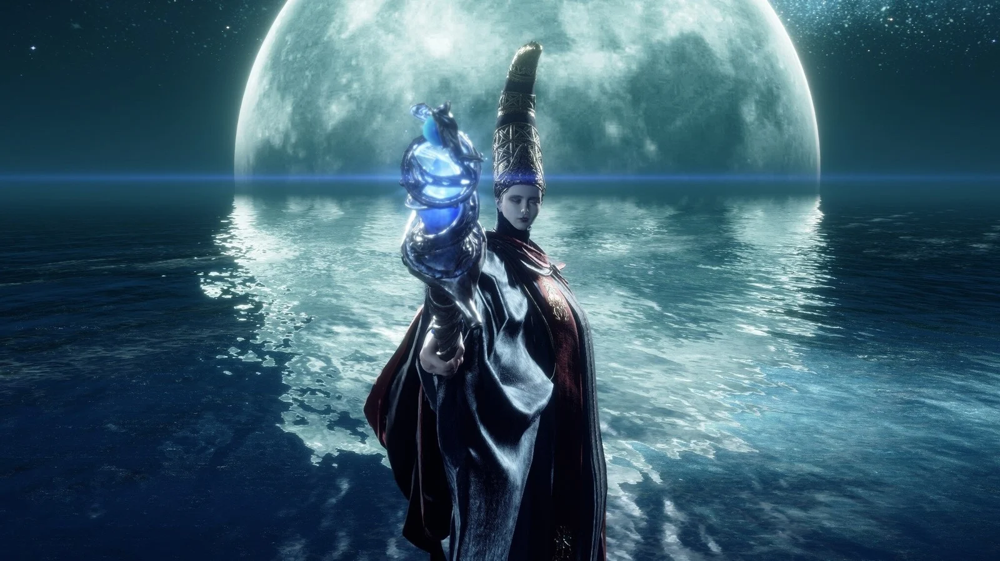
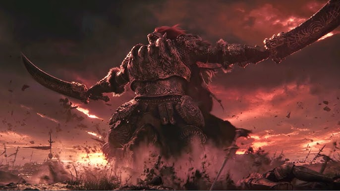
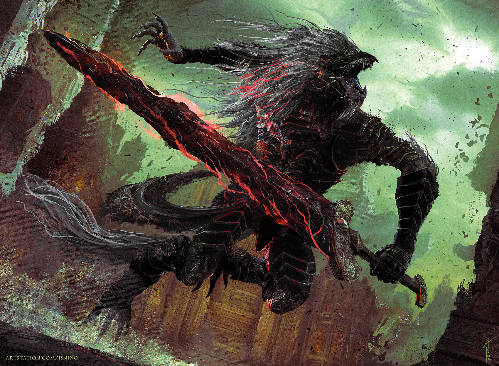

Margit the Fell Omen is one of the first major bosses players encounter in Elden Ring, serving as a brutal skill check before entering Stormveil Castle. This towering, spectral warrior wields a massive staff and conjures glowing weapons to deliver swift, punishing combos that can overwhelm unprepared players. His aggressive fighting style, combined with deceptive timing and ranged magical attacks, forces players to master dodging, stamina management, and patience. While Margit’s early appearance may seem optional, defeating him is crucial to progressing the main storyline. His fight emphasizes the importance of leveling up, summoning allies, and learning enemy patterns — setting the tone for the many brutal challenges that await in the Lands Between.

The boss fight against Godrick the Grafted is a dramatic and intense battle that takes place at the end of Stormveil Castle. In the first phase, Godrick wields a massive golden axe and uses a mix of powerful melee combos and wind-based area attacks, making him aggressive and unpredictable. At the halfway point, the fight takes a grotesque turn when he severs his own arm and grafts a dragon’s head onto it, gaining devastating fire-based attacks in the second phase. The arena becomes more chaotic as Godrick unleashes sweeping flames and explosive moves, forcing players to stay mobile and time their dodges carefully. The battle is both a test of endurance and strategy, serving as a brutal introduction to the game’s demigod bosses and setting the tone for the challenges ahead.

The boss fight with Rennala, Queen of the Full Moon is a two-phase battle that contrasts sharply with most other major fights in Elden Ring. In the first phase, set inside a grand library, Rennala floats in a golden sphere while her enchanted students crawl on the floor, chanting. To break her shield, players must identify and attack the glowing students, causing the barrier to collapse and exposing her to damage. Once defeated, the fight transitions into a second phase in a surreal, moonlit realm, where Rennala uses powerful sorceries, including moon spells, homing missiles, and the ability to summon spirits like wolves or a giant. The battle emphasizes ranged attacks, dodging, and patience, making it more about managing magical onslaughts than brute melee combat. It’s a visually stunning, atmospheric fight that showcases Rennala’s tragic elegance and magical mastery.

The boss fight with Starscourge Radahn is one of the most epic and cinematic battles in Elden Ring, taking place in the vast desert of Redmane Castle during the Radahn Festival. Radahn, once a mighty general and master of gravitational magic, has gone mad due to the influence of Scarlet Rot, yet retains immense strength. The fight begins with the player summoning NPC allies from across the Lands Between to help in a chaotic, large-scale battle. Radahn charges across the battlefield on his tiny horse, launching deadly arrows from a distance and unleashing massive, earth-shattering attacks up close. Midway through the fight, he disappears into the sky and re-enters like a flaming meteor, signaling a devastating second phase. The fight is both a spectacle and a test of endurance, symbolizing the tragic fall of a legendary warrior and standing as one of the game’s most memorable moments.

The fight with Maliketh, the Black Blade in Elden Ring is one of the most intense and memorable late-game battles. It begins with an initial phase against the Beast Clergyman, a fast and aggressive foe who uses feral claw swipes, lunges, and beast-incantation-based shockwaves. Once his health drops to half, the true battle begins as he reveals his identity as Maliketh, the Black Blade. In this second phase, Maliketh wields the Black Blade with acrobatic ferocity, leaping across the arena, unleashing wide, sweeping combos, and using devastating magic that applies the Destined Death effect, which temporarily reduces maximum health. His relentless speed, powerful ranged attacks, and aggressive melee patterns make the fight a chaotic but cinematic challenge. Defeating Maliketh is a pivotal moment in the story, as it seals away Destined Death once more and opens the path to the game’s final stages.